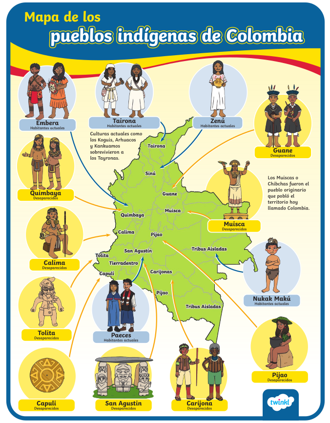

📜 Artículos Constitucionales sobre Diversidad Cultural
⚖️📝🇨🇴
📋 Artículo 7
"El Estado reconoce y protege la diversidad étnica y cultural de la nación colombiana."
🛡️ Artículo 13
"El Estado debe proteger especialmente a las personas que se encuentren en condiciones de vulnerabilidad, promoviendo su inclusión y la valoración de su diversidad cultural."
🗣️ Artículo 70
"El Estado protegerá la diversidad y la pluralidad lingüística, cultural y étnica del país, en especial las lenguas y tradiciones de los pueblos indígenas y afrocolombianos."
🏛️ Artículo 71
"La ley protegerá el patrimonio cultural de la nación, entendido como el conjunto de elementos materiales e inmateriales que expresan la identidad cultural de los pueblos colombianos."
🤝 Artículo 76
"El Estado y la sociedad fomentarán el respeto y la integración de los pueblos indígenas, afrocolombianos y demás comunidades que constituyen la diversidad cultural de la nación."
⚔️ Artículo 87
"Toda persona podrá interponer acción de tutela para la protección de sus derechos fundamentales, incluidos aquellos relacionados con la preservación de su identidad cultural y la diversidad étnica."
Patrimonio Cultural 🏺
🏺
Patrimonio Material
Objetos, estructuras y artefactos tangibles que representan la cultura de un pueblo, como artesanías, monumentos y edificios históricos. 🎨🖼️
🎵
Patrimonio Inmaterial
Tradiciones, lenguas, costumbres, música, danzas 💃🕺 y conocimientos que se transmiten de generación en generación. 👨👩👧👦
🏘️ Pueblos Indígenas de Colombia
🌎🏔️🌳
📍 Mapa de Pueblos Indígenas en Colombia

🗺️ Distribución de Pueblos Indígenas Colombianos
Este mapa ilustra la ubicación geográfica de las principales comunidades indígenas en Colombia. Los pueblos indígenas se distribuyen en diferentes regiones del país, desde la Sierra Nevada en el norte hasta la Amazonía en el sur y oriente, preservando sus tradiciones y territorios ancestrales.
⛰️ Región Andina y Sierra Nevada
Arhuaco, Kogui, Kankuamo y otros pueblos ubicados en las montañas. Preservan tradiciones ancestrales y sistemas de gobierno propios. 🏔️
🌴 Región Caribe y La Guajira
Wayuu (la población indígena más grande de Colombia), Zenú y otras comunidades con tradiciones ganaderas y pesqueras. 🐪
🌳 Región del Chocó
Embera y otros pueblos selváticos. Dependen de la biodiversidad de la región y mantienen sistemas de vida comunitarios. 🌿
🦜 Región Amazónica
Nukak Makú, Ticuna, Cocama y muchos otros pueblos. Habitan en el corazón de la Amazonía colombiana. 🌲
Pueblos Originarios y Actuales 👥
🏛️
Muisca (Chibchas)
⚠️ Desaparecidos
Pueblo originario que pobló el altiplano cundiboyacense
🏘️
Tairona
⚠️ Desaparecidos
Existieron en la región de la Sierra Nevada
⛰️
Kogui, Arhuaco, Kankuamo
✅ Habitantes Actuales
Culturas que sobrevivieron a los Tayronas
🌾
Zenú
✅ Habitantes Actuales
Ubicados en la región Caribe de Colombia
🥁
Paeces
✅ Habitantes Actuales
Comunidad indígena del Cauca
🌳
Embera
✅ Habitantes Actuales
Ubicados en Chocó, Antioquia y Córdoba
🌿
Nukak Makú
✅ Habitantes Actuales
Pueblo de la Amazonía colombiana
🐪
Wayuu
✅ Habitantes Actuales
Mayor población indígena en Colombia
👻
Desaparecidos Antiguos
⚠️ Desaparecidos
Quimbaya, Carijona, San Agustín y otros
ℹ️ Datos Importantes
🌍 Colombia es uno de los países con mayor diversidad étnica de América Latina
📊 Existen aproximadamente 80 pueblos indígenas reconocidos
⚠️ Los pueblos indígenas enfrentan riesgos de pérdida de lenguas y tradiciones
🔴 Muchas comunidades están ubicadas en zonas de conflicto armado
👨👩👧 Se estima que habitan más de 1.3 millones de indígenas en Colombia
🗺️ Los pueblos indígenas ocupan aproximadamente el 27% del territorio nacional
🎓 Conceptos Clave sobre Diversidad Cultural
📚🧠💡
🌐
Diversidad Étnica
Coexistencia de distintos grupos de personas que comparten características comunes como origen, cultura, lengua y tradiciones.
🎭
Identidad Cultural
Conjunto de características, valores y tradiciones que definen a una comunidad y la distinguen de otras.
🛡️
Vulnerabilidad Social
Condición de exposición a riesgos sociales, económicos o políticos que enfrentan comunidades indígenas.
🌍
Pluralismo Cultural
Principio que reconoce y valora la coexistencia pacífica de múltiples culturas en una sociedad.
⚖️
Inclusión Social
Proceso que garantiza iguales oportunidades de participación de todas las personas sin importar origen étnico.
📚
Patrimonio Inmaterial
Tradiciones, costumbres, conocimientos y prácticas que caracterizan a una comunidad y se transmiten oralmente.
💡 Reflexión Importante
🤝 La protección de la diversidad cultural no es solo un deber del Estado, sino también una responsabilidad compartida con toda la sociedad.
Cada ciudadano puede contribuir a valorar, respetar e incluir a las comunidades indígenas y afrocolombianas, reconociendo su riqueza cultural 🌟 y garantizando que sus tradiciones, lenguas y saberes ancestrales perduren para futuras generaciones. 👨👩👧👦
❓ Cuestionario Interactivo
📝✏️🎯
1Según el Artículo 13, ¿cuál es el desafío más importante al que se enfrenta el Estado al proteger a las personas en condiciones de vulnerabilidad? 🛡️
Retroalimentación:
2A partir del Artículo 70, que protege la pluralidad lingüística, ¿cuál sería una consecuencia negativa de no implementar políticas efectivas? 🗣️
Retroalimentación:
3En relación con el Artículo 71, ¿por qué es crucial incluir elementos materiales e inmateriales de la cultura? 🏺🎵
Retroalimentación:
4¿Cuál de las siguientes afirmaciones es VERDADERA según la Constitución? 📋